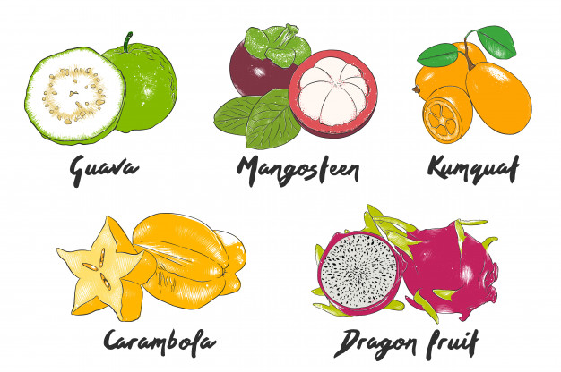
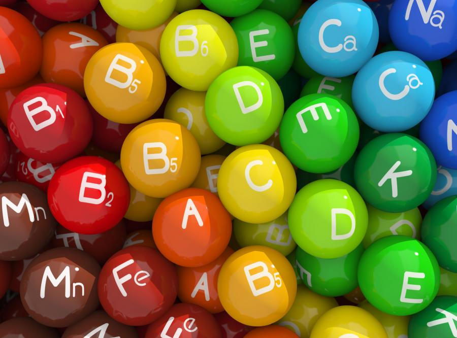

tu dowiesz sie jak zdrowe są cytrusy

wartości odżywcze cytrusów i diety
Owoce cytrusowe są dobrym źródłem przede wszystkim witaminy C,
ale też witamin z grupy B, folianów i licznych składników mineralnych.
Owoce cytrusowe zawierają także błonnik pokarmowy oraz flawonoidy.
Dzięki zawartości witaminy C wzmacniają odporności organizmu
i poprawiają wchłaniania żelaza z diety,
tym samym zapobiegając anemii.
Mają również korzystny wpływ na zachowanie równowagi kwasowo-zasadowej organizmu.
Ich regularne spożywanie przyczynia się do obniżenia poziomu cholesterolu LDL we krwi
oraz poziomu homocysteiny, co zmniejsza ryzyko chorób sercowo-naczyniowych.
Owoce cytrusowe świetnie sprawdzą się w diecie osób odchudzających się,
ponieważ są niskokaloryczne i zawierają ligninę - substancję,
która spowalnia trawienie i wchłanianie oraz zwiększa uczucie sytości.
